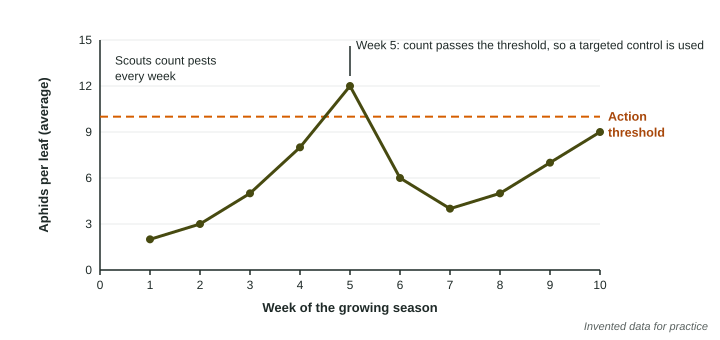

Spraying pesticides on a fixed schedule kills nontarget organisms, pollutes water, and breeds resistant pests. Integrated pest management (IPM) is the main alternative. This page explains how it works, its tools, and its trade-offs.
What IPM is
Integrated pest management combines several methods to keep pests below the level where they cause real economic damage, using as little pesticide as possible. It does not try to kill every pest. A few aphids on a field of lettuce cost less than the spray that would kill them, and they feed the ladybugs that keep aphids in check later.
An IPM program follows a sequence:
- Identify the pest and learn its life cycle, so controls hit it at its weakest stage.
- Monitor it: scout fields, set sticky traps, and count pests regularly.
- Set an action threshold: the count at which damage would cost more than control.
- Prevent outbreaks: change which crop grows in a field from year to year, plant resistant varieties, time planting to avoid the pest's peak, keep fields clean.
- Control with the narrowest tool first, and use a targeted pesticide only if counts pass the threshold.

The tools
| Kind of control | Examples | How it works |
|---|---|---|
| Biological | ladybugs and lacewings for aphids; tiny wasps that lay eggs in caterpillars; bacteria that sicken caterpillars | natural enemies eat, parasitize or infect the pest |
| Physical | traps, row covers, barriers, hand weeding | remove pests or block them from the crop |
| Cultural | switching the crop grown in a field from year to year, intercropping, resistant varieties, timing of planting | make the field a poor home for the pest |
| Chemical (last resort) | a targeted pesticide at the right stage, spot-sprayed | kills the pest with less harm to others |
Biological control needs care: a natural enemy brought from another region can attack species it was not meant to, so tested, specific enemies are used.
Benefits and drawbacks
Benefits: much less pesticide; lower costs over time; less harm to bees, birds, fish and the predators that eat pests; less pesticide in water and on food; and slower evolution of resistance, because fewer sprayings mean weaker selection. Drawbacks: farmers need training to identify pests and natural enemies; scouting takes labor and time; biological controls act more slowly than a spray; and some crop damage is accepted.
A farm used 24 kg of insecticide per hectare on a fixed schedule; under IPM it uses 30% of that: kg per hectare.
Orchard A uses 18 kg per hectare and orchard B, under IPM, 5 kg. Percent change: .
If B saves 400 dollars per hectare on 20 hectares:
IPM at different scales
IPM works for a backyard garden, a 500-hectare farm or a whole country. A gardener can hand-pick beetles and plant flowers that attract predators. A farm can hire scouts and use pheromone traps to time sprays. A government can train farmers, fund research on natural enemies, and pass rules that limit the most harmful pesticides, as Indonesia did for rice in the 1980s.
When the exam asks for a pest control solution "other than pesticides", name a specific IPM tool and say how it works: "Plant strips of flowers that attract lacewings, which eat the aphids, keeping them below damaging levels."